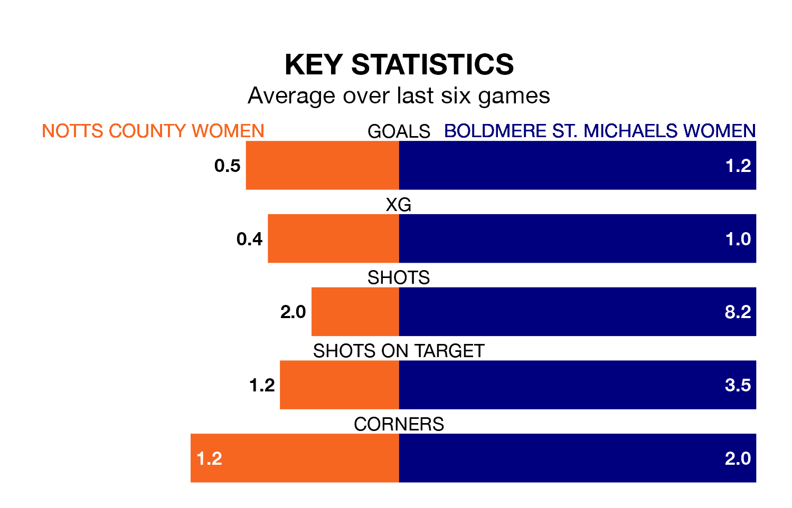

Struggling Notts County Women face Boldmere St. Michaels Women on Sunday looking to build on a win in their last league outing.
After securing all three points with a 1-6 victory over Peterborough United Women on March 13, Notts County sit 10th in the Women's National League Division One Midlands.
They travel to play a Boldmere St. Michaels side fourth in the standings, who lost in their last match, 4-1 against Northampton Town Women, on March 12.
Notts County are in bad form in the Women's National League Division One Midlands, with one win and a draw from their last six games.
With three wins and a draw over that period, Boldmere St. Michaels's form is much better – they have taken 10 points from 18, compared to the hosts' four.
With 16 goals in 16 games so far this season, Notts County are the league's third-lowest scorers with 1.0 goals per game. And they are conceding more than average, letting in 56 goals at a rate of 3.5 per game.
The away team are also below average scorers, with 1.7 goals per game, compared to a league average of 1.8. They have conceded 1.2 goals per game.
Updated: 10:19 (UTC), 22/03/24